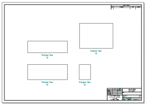

Create Quicksheet Template command
The Create Quicksheet Template command creates a template of drawing views that are not linked to a model. You can then drag a model from the Library tab or from Windows Explorer onto the template, and the views populate with the model.

To create a Quicksheet template, configure drawing views of the type and with the properties you want, and then choose the Create Quicksheet Template command. A message box is displayed advising you to save your current work before the drawing views are emptied. When you click Yes, you can save the file with the name and location you want, and the Quicksheet template is ready for use.
When you create a Quicksheet template, all drawing views on all sheets are emptied, including parts lists. Almost all view properties, including general properties, text and color properties, and annotation properties, are maintained. However, some display properties, such as selected parts display, Show Fill Style, and Hidden Edge Style, are not maintained.